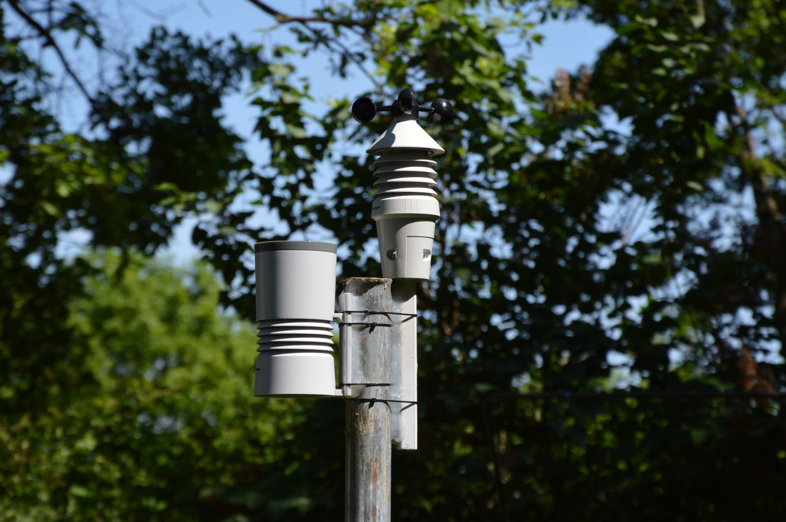
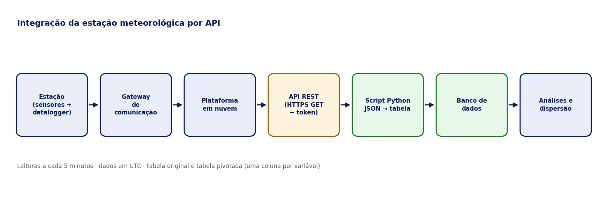
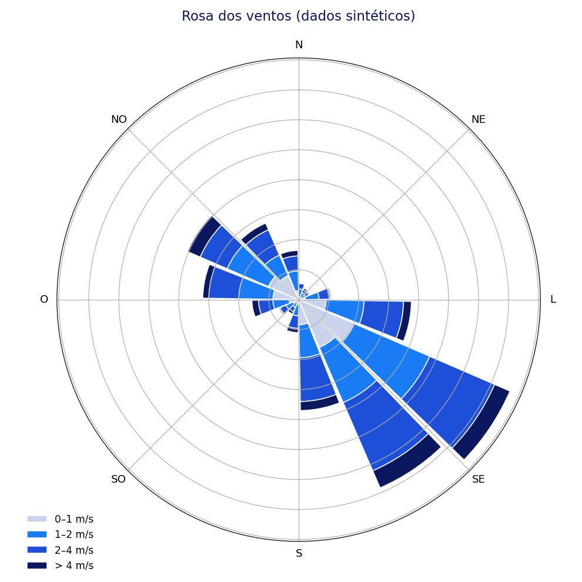
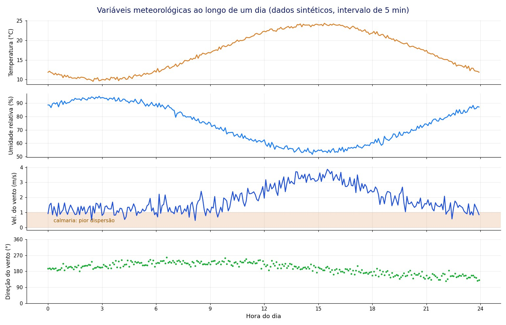
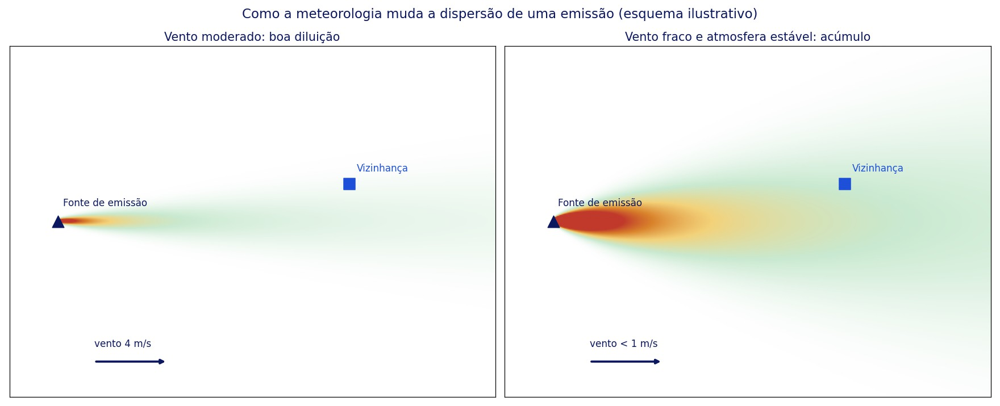

Problema / desafio do cliente
Uma central de tratamento de efluentes e resíduos no estado de São Paulo possui uma estação meteorológica automática no próprio site, mas os dados só podiam ser consultados manualmente na plataforma do fabricante, sem integração com as bases de dados da operação.
A empresa precisava usar essas informações para entender como as condições do tempo influenciam a dispersão de odores e emissões gasosas em direção à vizinhança e, a partir disso, apoiar decisões de operação.
Contexto e características do processo
- Estação com datalogger e sensores de temperatura do ar, umidade relativa, ponto de orvalho, velocidade e direção do vento, rajadas e precipitação, além do nível de bateria do equipamento.
- Leituras a cada 5 minutos, enviadas por um gateway de comunicação para uma plataforma em nuvem com API REST.
- Planta com fontes potenciais de odor, como tanques abertos e manejo de lodo, próxima a áreas habitadas.

Diagnóstico e dados analisados
Cada variável foi analisada pelo seu significado físico e pela sua relevância para a dispersão de poluentes:
- Direção do vento: define para onde a pluma de odor ou de gases é transportada.
- Velocidade do vento: quanto maior, maior a diluição. Em calmaria, os gases se acumulam perto da fonte.
- Rajadas: indicam turbulência e servem para alertas operacionais.
- Temperatura e ciclo diário: ajudam a identificar a estabilidade da atmosfera. Noites e madrugadas frias e sem vento costumam ser as condições mais desfavoráveis.
- Umidade relativa e ponto de orvalho: indicam saturação do ar, condensação e formação de neblina, que favorecem a percepção de odores.
- Precipitação: promove a lavagem de poluentes da atmosfera e é usada também no balanço hídrico.
Metodologia utilizada
- Levantamento da estação, dos sensores e das variáveis registradas.
- Configuração do acesso à API da plataforma: requisições HTTPS do tipo GET, com autenticação por token e parâmetros de estação e período.
- Desenvolvimento de um script em Python que recebe os dados em JSON, converte-os em tabela e gera uma versão original e uma versão pivotada (uma coluna por variável, com o horário como índice).
- Definição do tipo de dado, unidade e precisão de cada variável para o armazenamento em banco de dados.
- Validação dos dados: faixas esperadas, dados faltantes e sincronização de horário em UTC.
- Análises: rosa dos ventos, séries temporais e estatísticas, com interpretação para a dispersão de poluentes.

Solução de engenharia desenvolvida
A GETA estruturou um fluxo automático de dados da estação até a análise:
- Coleta automática por API, sem downloads manuais na plataforma.
- Tabela padronizada, com horário em UTC e uma coluna para cada variável, pronta para planilhas ou banco de dados SQL.
- Modelo de armazenamento com tipo de dado e precisão definidos para cada variável:
| Variável | Unidade | Tipo de dado |
|---|---|---|
| Data e hora (UTC) | ISO 8601 | TIMESTAMP |
| Temperatura do ar e ponto de orvalho | °C | FLOAT |
| Umidade relativa | % | FLOAT |
| Velocidade do vento e rajada | m/s | FLOAT |
| Direção do vento | ° (0 = norte) | SMALLINT |
| Precipitação | mm | FLOAT |
| Bateria do datalogger | V | FLOAT |
Interpretação para a operação: com os dados meteorológicos, é possível programar atividades com maior potencial de odor para os períodos de vento moderado e direção contrária à vizinhança, gerar alertas em condições de calmaria e atmosfera estável e cruzar eventuais reclamações de odor com a direção do vento no momento da ocorrência.
Tecnologias e processos envolvidos
A integração usa uma API REST com respostas em JSON, consumida por um script em Python (bibliotecas de requisição HTTP e de tratamento de dados tabulares). Os dados são organizados para carga em banco de dados SQL e para uso em ferramentas de análise e visualização.
A interpretação se apoia em conceitos de meteorologia aplicada à dispersão atmosférica: transporte pelo vento, diluição, estabilidade da atmosfera e o modelo de pluma gaussiana.
Modelagem, simulação e ferramentas computacionais
- Rosa dos ventos para identificar as direções predominantes e a frequência de calmarias.
- Séries temporais de alta resolução para analisar o ciclo diário das variáveis.
- Estatísticas descritivas e verificação de faixas e dados faltantes.
- Esquemas de dispersão com o conceito de pluma gaussiana, mostrando o efeito do vento e da estabilidade atmosférica.
- Base pronta para simulações físicas de dispersão e modelos de aprendizado de máquina.



Resultados obtidos
- Integração automática da estação com as bases de dados da operação, eliminando a consulta manual na plataforma.
- Dados a cada 5 minutos, padronizados em UTC, com tipos e unidades definidos.
- Ferramentas de interpretação (rosa dos ventos, séries e estatísticas) para entender as condições de dispersão.
- Diretrizes para usar a meteorologia nas decisões de operação e no controle de odores.
- Base estruturada para análises estatísticas, simulações físicas e modelos de aprendizado de máquina.
CAPEX/OPEX e análise técnico-econômica
Quando aplicável: estimativas de CAPEX e OPEX, comparação entre alternativas, custo por m³ ou por tonelada, payback.
Escopo e responsabilidades da GETA
A GETA atuou na supervisão técnica e na engenharia de dados, sendo responsável por:
- levantamento da estação e das variáveis medidas;
- configuração do acesso à API e desenvolvimento do script de integração;
- definição do modelo de armazenamento e das regras de validação;
- análise dos dados e interpretação dos parâmetros ambientais para a dispersão de poluentes.
Principais entregáveis
- Relatório de gestão de dados do sistema de monitoramento meteorológico.
- Script em Python de integração com a API, com exportação em tabela original e pivotada.
- Dicionário de variáveis com significado físico, unidade, tipo de dado e precisão.
- Recomendações de validação, sincronização em UTC e carga em banco de dados.
- Análises e guia de interpretação meteorológica para a dispersão de poluentes.
Galeria
Fotos ilustrativas de banco de imagens (Pexels) e gráficos com dados sintéticos, preservando a confidencialidade do cliente.